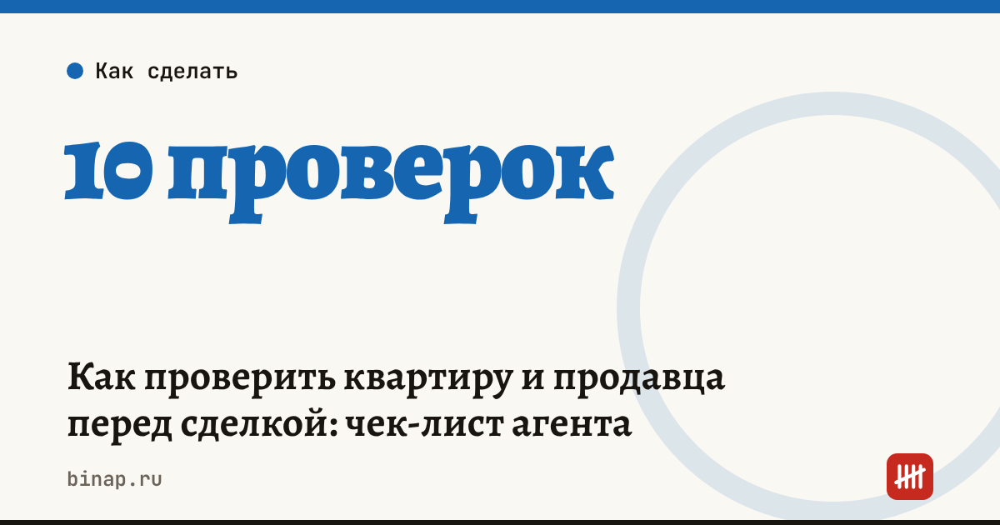

Как проверить квартиру и продавца перед сделкой: чек-лист агента

Проверка квартиры и продавца — главная услуга агента, за которую платит покупатель. Её цель — убедиться, что продавец вправе продать квартиру, на ней нет обременений, сделку не оспорят родственники или кредиторы, а после покупки в квартире не останутся чужие жильцы. Ниже — чек-лист и где смотреть.
Коротко
- Выписка из ЕГРН показывает собственников, обременения и аресты — заказывайте её свежей, перед задатком и перед сделкой.
- История переходов права помогает увидеть частые перепродажи и сделки, которые могут оспорить.
- Если квартира куплена в браке, нужно нотариальное согласие супруга продавца.
- Доли детей и материнский капитал — повод проверить выделение долей и согласие органов опеки.
- Банкротство продавца и долги — риск оспаривания сделки кредиторами.
Сроки, изменения и разборы для ИП и самозанятых — каждое утро в Telegram и MAX. Подпишитесь, чтобы не пропустить.
Чек-лист проверки
| № | Что проверить | Где смотреть | Тревожный знак |
|---|---|---|---|
| 1 | Собственники и доли | выписка ЕГРН | продавец не единственный собственник, нет согласия остальных |
| 2 | Обременения и аресты | выписка ЕГРН | ипотека, арест, запрет регистрационных действий |
| 3 | История переходов права | выписка о переходе прав | несколько продаж за короткий срок |
| 4 | Основание права | договор, свидетельство о наследстве, приватизация | недавнее наследство — возможны другие наследники |
| 5 | Согласие супруга | нотариальное согласие | квартира куплена в браке, согласия нет |
| 6 | Дети и материнский капитал | документы о покупке, опека | маткапитал без выделения долей детям |
| 7 | Банкротство продавца | федеральный реестр сведений о банкротстве | продавец в процедуре или на грани |
| 8 | Долги продавца | банк данных ФССП | крупные исполнительные производства |
| 9 | Зарегистрированные жильцы | выписка о зарегистрированных | остаются люди, которые не обязаны выписаться |
| 10 | Долги по коммунальным | справка от управляющей компании | крупный долг |
Как фиксировать проверку
Сохраняйте выписки и скриншоты с датой в деле клиента. Это доказывает, что агентство выполнило услугу, и пригодится, если сделку попробуют оспорить. Пропишите проверку как отдельный пункт услуги в договоре с клиентом — что включить в договор.
Пример (условный). Квартира получена продавцом в наследство 8 месяцев назад. Риск: может объявиться наследник, пропустивший срок. Что делать: запросить документы нотариуса о наследстве, обсудить с покупателем риск и, при необходимости, страхование титула.
Вести объекты, проверки и сроки сделок в CRM: ссылка
Что сделать
- Закажите свежую выписку ЕГРН перед задатком и ещё одну — в день сделки.
- Пройдите все 10 пунктов и сохраните результаты в деле клиента.
- Если есть тревожный знак — обсудите с покупателем и юристом до задатка.
Сколько агентство зарабатывает с одной сделки — калькулятор дохода. Форма работы риелтора — самозанятый, ИП или ООО. Все шаги — в разделе «Агентствам недвижимости».
Частые вопросы
Когда заказывать выписку из ЕГРН? Перед задатком и ещё раз непосредственно перед сделкой: обременение или арест могут появиться в любой момент.
Нужно ли согласие супруга, если квартира оформлена на одного? Если квартира куплена в браке, она по общему правилу совместная собственность, и для продажи нужно нотариальное согласие супруга.
Что делать, если продавец в процедуре банкротства? Сделку в такой ситуации совершают только с участием финансового управляющего. Без него она может быть признана недействительной.